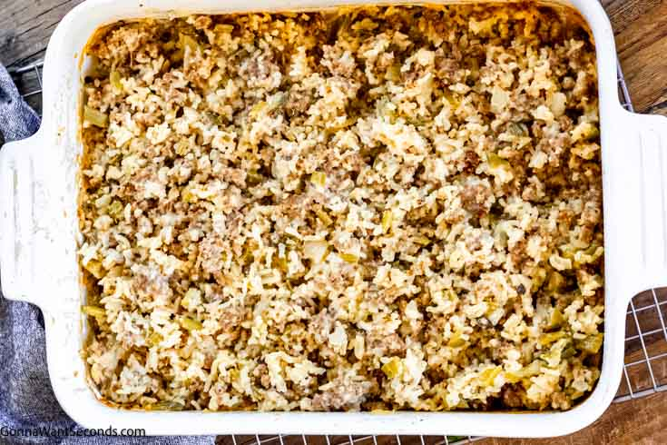

Sausage Rice Casserole
This is a lovely and easy to make recipe that feeds six

Ingredients
- 1 package of bulk sausage
- 1 bell pepper
- 1 packet of dry mix chicken noodle soup mix
- 2 cups of white rice
- 1/2 cup of water
Instructions
- first brown the sausage in a pan over medium heat
- when browned, drain excess fat and water from the pan
- steam the rice in a rice cooker until done
- chop the bell pepper into small squares
- mix all ingredients in a casserole dish mixing until the dry packet has disolved into the water
- place in an over at 350 degrees for 30 minutes